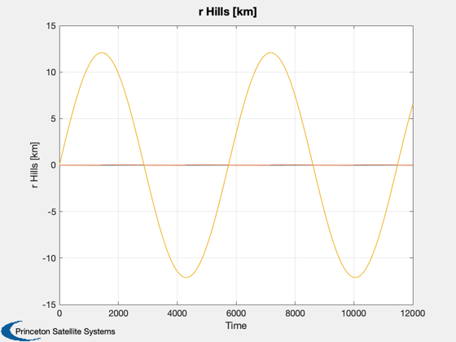
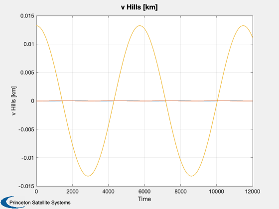

Two orbits are initialized with a small inclination difference. The orbits
are propagated with Kepler's equations using RVOrbGen. The ECI position
and velocity of each orbit is then transformed into the relative Hills frame.
Since version 7.
------------------------------------------------------------------------
See also Constant, Plot2D, ECI2Hills, RVOrbGen
------------------------------------------------------------------------
clear xH; clear vH; clear rH; clear t;
t = 0:10:12000;
rE = Constant('equatorial radius earth');
alt = 550;
a = rE + alt;
inc = 35.4*pi/180;
deltaInc = .1*pi/180;
el0 = [a, inc, 0, 0, 0, 0];
el1 = [a, inc + deltaInc, 0, 0, 0, 0];
[r0,v0] = RVOrbGen( el0, t );
[r1,v1] = RVOrbGen( el1, t );
x0 = [r0; v0];
x1 = [r1; v1];
for i=1:length(t)
xH(:,i) = ECI2Hills( x0(:,i), x1(:,i) );
end
rH = xH(1:3,:);
vH = xH(4:6,:);
Plot2D( t, rH, 'Time', 'r Hills [km]')
Plot2D( t, vH, 'Time', 'v Hills [km]')
 